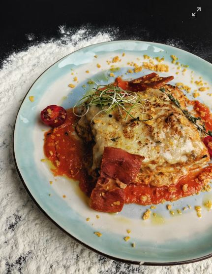

Lasagna

Description
Lasagna is a classic Italian dish made by layering pasta sheets with a rich meat sauce, creamy béchamel, and melted cheese. It’s baked until golden and bubbly, delivering a hearty and comforting meal perfect for family gatherings.
- Lasagna pasta sheets
- Ground beef
- Tomato sauce
- Onion
- Garlic
- Olive oil
- Salt
- Black pepper
- Italian herbs (basil, oregano)
- Béchamel sauce (butter, flour, milk)
- Mozzarella cheese
- Parmesan cheese
Steps
- Prepare the meat sauce: sauté onion and garlic, add ground beef and cook until browned.
- Add tomato sauce and seasonings (salt, pepper, herbs) and simmer on low heat.
- Prepare the béchamel sauce (butter, flour, and milk) until thickened.
- In a baking dish, layer lasagna sheets, meat sauce, béchamel sauce, and cheese.
- Repeat layers until all ingredients are used, finishing with cheese on top.
- Bake in a preheated oven at 180°C (350°F) for about 40 minutes, until golden and bubbly.